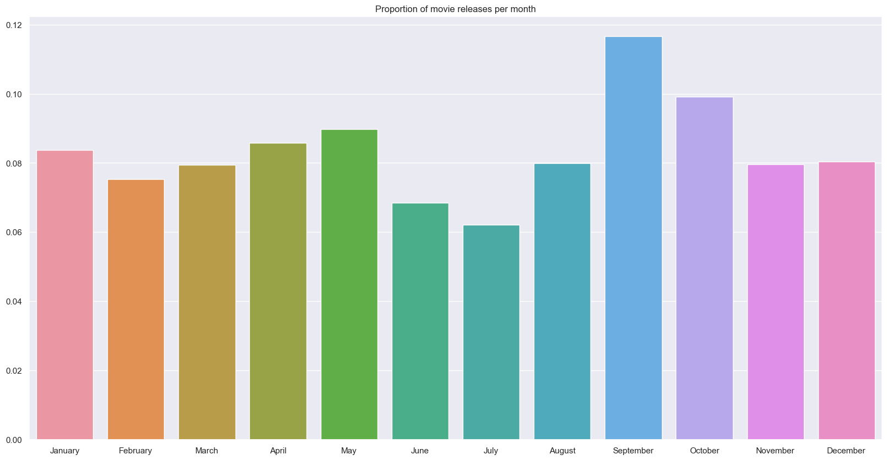

Weather Data Analysis
A deeper dive into the decisions we made when processing the weather data.
An analysis of the effect of weather on movie revenue.
Ever wonder if rain makes people crave a good comedy, or if sunny days sparks an interest in action movies? Join us as we explore the surprising ways that weather might influence what people watch in theaters across the United States. From rainy nights to sunny afternoons, let's discover how the skies above could shape the movies we love. Ready for an adventure into the world of weather and films? Let's go!
In our data story, we will analyze how bad weather might affect different aspects of the film industry of the United States, from overall revenue to per genre distributions. Who knows, maybe everyone enjoys the warmth and coziness of a romance movie more when it is pouring or heavily snowing outside!
The CMU Movie Summary Corpus provides metadata about movies released between 1893 and 2012. It provides us with a wide range of movie data, from box office revenue to a list of movie genres. On the other hand, the weather datasets from the National Oceanic and Atmospheric Administration (NOAA), are significantly more reliable the more recent the date. To balance out these two datasets, we chose to use the data range from 1992-2012 and restrict our data to be for the United States only, since weather is well documented there.
But before we delve too deep into the details of the analysis, let's take a quick look at the datasets!

A deeper dive into the decisions we made when processing the weather data.
An explanation for how we chose to process and analyze the movie data.
Let's start with a basic analysis, or we can call it a naive one. We first remove all of the outliers, namely the films that have too high of a revenue and, symmetrically, too low of a revenue. We then do a matching to pair approximate release dates (within a week), to eliminate any weather differences over extended periods of time. Over a few weeks in October, the weather can change from warm, sunny weather to chilly, fall weather, meaning that when pairing the movies, we should match approximate time of year.
Everyone has their own opinion about when is the best time to watch certain movie genres. Don't believe us?
Now that we know weather has some effect on movie revenue, it's time to see if producers and movie studios know this fact and schedule their movie releases around months where weather is nicer. If I were a movie producer, I would aim to release a movie during summer: all the students are out, the weather is nice, and the parents are also looking to take vacations during this time. Is there a better moment to release a movie? Well, let's see!
Let's compare the proportion of bad weather days per month to the number of movie releases across each month:
At a quick glance, we can actually notice that summer months like June and July actually have very few movie releases, whereas September has the most (turns out I'm not fit to be a movie producer...). But, we notice that summer months also seem to have the highest proportion of bad weather days. Maybe producers do know how to strategically
Then, we do the same for the probability of rain for each month. The summer month appear to be the one with the most bad weather cases. This contrast with the result from above, as they are the months with the least amount of movie released. \picture with the bad weather per month To get into more details, we look at the number of movies released per month between 1992 and 2012, and the amount of bad weather days between these 2 days. These are shown in the heatmaps below: \heatmaps However, it shows that September tends to have a lot of bad weather days, but also lots of movie released, while June and July have a lot of bad weather days, and low amount of movie released Additionally, running a correlation between these 2 variables, we obtain the following graph, that shows no clear correlation. The score is also quite low : 0.16, indicating that there is a low effect. \correlation
We all have some movie that is a definite must-see once it gets released, whether that was the Barbie and Oppenheimer dual release or the latest Studio Ghibli film: The Boy and the Heron. However, not all movies that we watch fall under that category. Sometimes, we make the decision to do something else – eat out, stay at home, or go out with friends – rather than go to the movies. When exactly do we make these sacrifices? Most likely, when the movie isn't famous enough for us to watch immediately.
Most of the famous movies we can think of are from major film studios. Just to list a few, there's Universal Studios, with its theme park in Los Angeles as well, and Fox Studios, with its classic beams of light shining on the large statue of "FOX". These famous film studios come with many perks, such as a huge production budget and better film promotion.
So let's put it into perspective: just how much more revenue do movies from major films generate? Well, have a look below:
In case the stark drop in mean revenue for the indie films weren't enough as an answer, the answer: a lot more. We can even do a t-test if you still aren't convinced. Doing a test on the distribution of revenue for all the major film studio releases against the distribution of the indie films, we get a p-value of \(6.98\cdot 10^{-98}\) which we will just call \(0\). A p-value this small provides strong evidence against both revenues distributions being equal. A t-statistic of \(21.83\) only serves as further justification for our findings.
We now know that indie films have a drastically lower average revenue than movies released by bigger studios, but we still have yet to figure out: are indie movies more affected by weather?
To answer this question, we isolated the opening weekend for all films and checked how much the proportion of bad weather days affected the distribution of movie revenue. We specifically looked for the opening weekend, as it is usually the most important weekend for all films – a substantial amount of their revenue (\(\sim 25-30\%\)) can be made during the opening weekend. For the following plot, each bad weather day adds 0.5 to the film's "weather condition," placing it into one of four categories along the x-axis.
As it turns out, major studios are actually more affected by weather! What a surprise – or is it? Since blockbusters are often marketed towards a general audience (the more people, the better), they generally have a larger fraction of people who can be called "the casual moviegoer". On the other hand, indie films are lesser known, but with this comes the fact that those who want to watch an indie film are usually avid fans of the studio and will watch the movie, rain or shine. To confirm our observations, we conducted a one sample t-test on both the blockbuster and the indie film distributions, and the t-statistics were \(-0.8253\) and \(-0.7537\), respectively. Although slight, the more negative t-statistic for the blockbusters show us that our observations are correct.
That's it! We’ve come to the end of our short data story. We saw how weather does affect movie revenue, but it’s split fairly evenly across genres. We also learned the surprising fact that indie films, despite their lower popularity, hold up better against bad weather than major blockbusters.
Now that you know weather has an effect, try testing it yourself! See if your friend group stands up to the test of rainy weather: do more of your friends ditch when it’s rainy? Or do you only plan to go if you know it’s sunny? It’s time to find out!